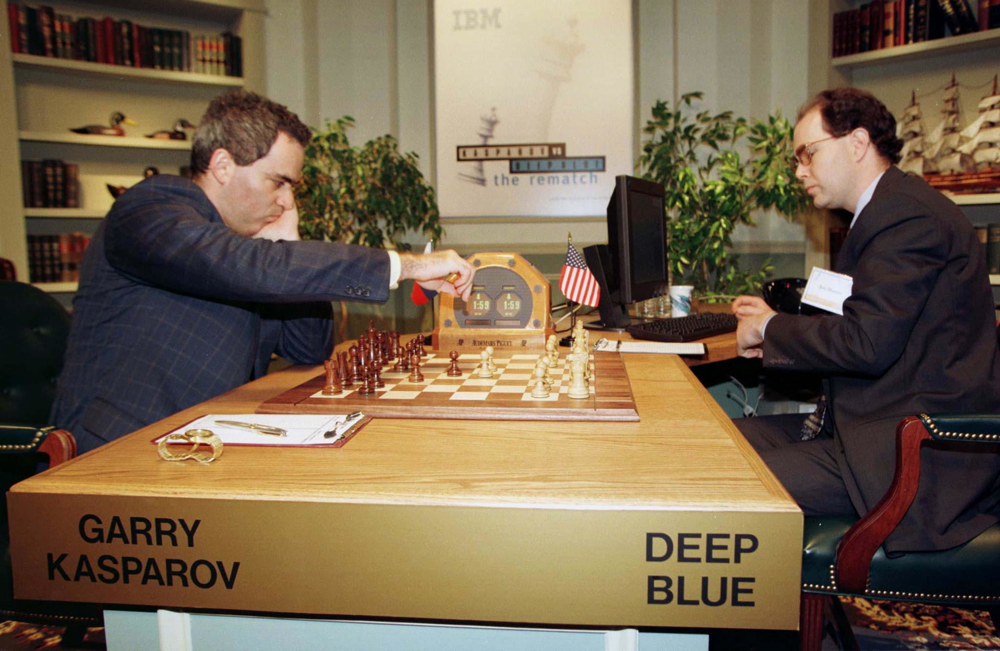

MACHINE LEARNING
Title description, Ags 22, 2022

Deep Blue
Reactive machines are the oldest and most basic form of Artificial Intelligence (AI) system that has very limited capabilities and has no off-duty capabilities. The working system of reactive machines can only be used to automatically respond to a limited set of inputs or combinations of inputs.
A popular example of reactvive machines is Deep Blue, a supercomputer built by IBM in the 1980s that beat chess Grandmaster Garry Kasparov in 1997. The supercomputer is programmed with the ability to identify a chessboard and its pieces by understanding the function of the pieces. Deep Blue can make predictions about what moves to make and what moves his opponent might make, thus having an enhanced ability to predict, pick and win.
THEORY OF MIND
Title description, Ags 22, 2022
 Robot
Robot
"Theory of mind" is a term used by psychologists and philosophers for the ability to predict the actions of ourselves and others by imagining ourselves in the shoes of something or someone else. Winfield thinks allowing robots to do this will help them infer the goals and desires of the agents around them. So Winfield's approach to machine learning is different. Where AI systems can be used, for example an artificial neural network that can train itself to perform a desired action in a way that meets user expectations. An increasingly common form of this is deep learning, which involves building large neural networks that can, to some extent, automatically learn how to interpret information, and select appropriate responses.